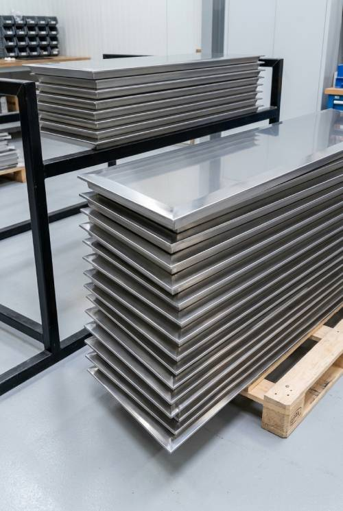
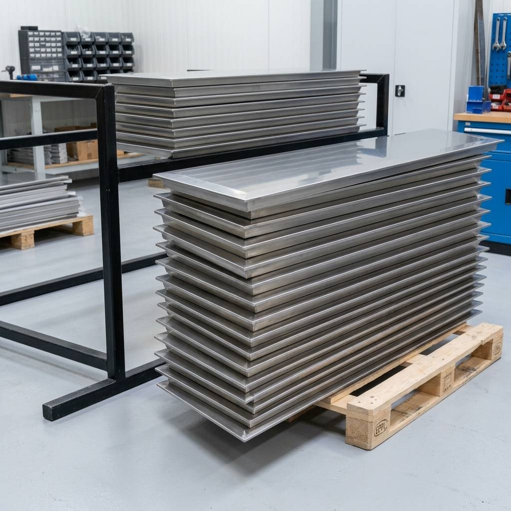
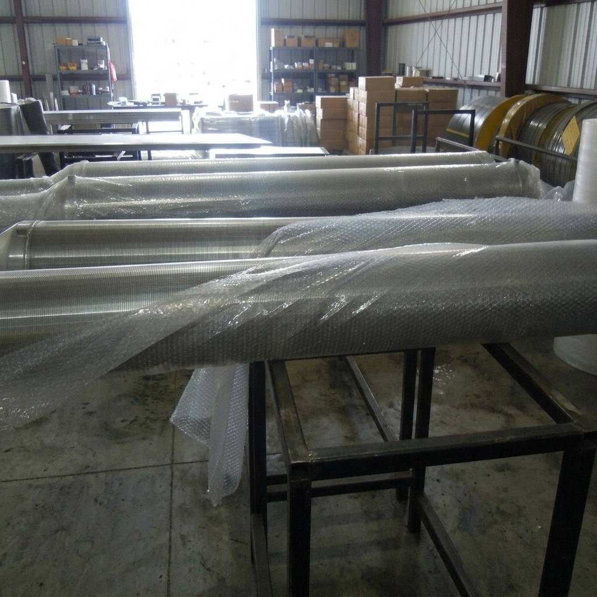

Nut Shell Filter Screens support produced water filtration systems using walnut shell media to retain oil droplets and suspended solids.
Designed for compatible filtration systems in the oil and gas industry, these screens support produced water treatment and industrial liquid filtration.

Walnut shell media captures oil and suspended particles as water passes through the filter bed. Backwashing helps remove accumulated contaminants and clean the media.
Screen specifications can be selected according to filter design, media retention needs and operating conditions to support reliable filtration and routine maintenance.


Nut Shell Filters are down flow, deep bed, walnut shell media filters, designed for produced water filtration. As the liquid passes through the media bed, oil and solids are efficiently retained in the bed, and can then be easily back washed out of the media bed with the rotating media scrubbing assembly.
Nut Shell Filters are down flow, deep bed, walnut shell media filters, designed for produced water filtration. As the liquid passes through the media bed, oil and solids are efficiently retained in the bed, and can then be easily back washed out of the media bed with the rotating media scrubbing assembly.
In oil fields, these Filters are used to remove suspended solids and hydrocarbons from produced water, surface water, sea water, river, lake, and well water. In metal working, power generation, municipal, chemical and petrochemical applications, they treat and remove suspended solids, oily residues, ash, and metallic hydroxides from industrial liquids. These screens purifies oily process water and industrial waste water.
We supply Nutshell Filter screens- Media Support Screens and Scrubber Support Screens for produced water or waste treatment system for a wide range of oil, gas, refining and chemical processing applications. Our good strength screens are designed to meet the customer requirements of pressure flow and operating temperature. We supply the screens mainly in materials as–SS304, SS316, Duplex/ Super Duplex [SS2205/SS31803].
At Dinco Industries, we combine decades of craftsmanship with state-of-the-art technology to deliver unmatched industrial wire mesh and perforated screen solutions globally.